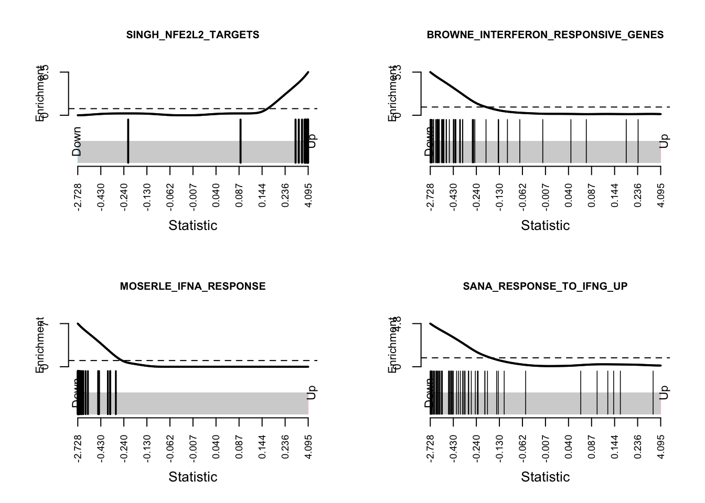

Last updated: 2022-09-28
Checks: 7 0
Knit directory: Troph_prasugrel_RNA-seq/
This reproducible R Markdown analysis was created with workflowr (version 1.7.0). The Checks tab describes the reproducibility checks that were applied when the results were created. The Past versions tab lists the development history.
Great! Since the R Markdown file has been committed to the Git repository, you know the exact version of the code that produced these results.
Great job! The global environment was empty. Objects defined in the global environment can affect the analysis in your R Markdown file in unknown ways. For reproduciblity it’s best to always run the code in an empty environment.
The command set.seed(20220920) was run prior to running the code in the R Markdown file. Setting a seed ensures that any results that rely on randomness, e.g. subsampling or permutations, are reproducible.
Great job! Recording the operating system, R version, and package versions is critical for reproducibility.
Nice! There were no cached chunks for this analysis, so you can be confident that you successfully produced the results during this run.
Great job! Using relative paths to the files within your workflowr project makes it easier to run your code on other machines.
Great! You are using Git for version control. Tracking code development and connecting the code version to the results is critical for reproducibility.
The results in this page were generated with repository version 920ff00. See the Past versions tab to see a history of the changes made to the R Markdown and HTML files.
Note that you need to be careful to ensure that all relevant files for the analysis have been committed to Git prior to generating the results (you can use wflow_publish or wflow_git_commit). workflowr only checks the R Markdown file, but you know if there are other scripts or data files that it depends on. Below is the status of the Git repository when the results were generated:
Ignored files:
Ignored: .DS_Store
Ignored: data/.DS_Store
Untracked files:
Untracked: analysis/Limma_DGE_analysis.Rmd
Untracked: data/MSigDB/
Untracked: output/hallmark.csv
Unstaged changes:
Modified: README.md
Note that any generated files, e.g. HTML, png, CSS, etc., are not included in this status report because it is ok for generated content to have uncommitted changes.
These are the previous versions of the repository in which changes were made to the R Markdown (analysis/edgeR_DGE_analysis.Rmd) and HTML (docs/edgeR_DGE_analysis.html) files. If you’ve configured a remote Git repository (see ?wflow_git_remote), click on the hyperlinks in the table below to view the files as they were in that past version.
| File | Version | Author | Date | Message |
|---|---|---|---|---|
| Rmd | 920ff00 | Sally Beard | 2022-09-28 | Publish the analysis script |
The sequencing data used in the following analysis was generated at Victorian Clinical Genetics Services (VCGS) from RNA isolated from primary trophoblasts isolated from n=7 placentas, cultured with prasugrel and vehicle for 24 hours. TruSeq stranded mRNA library prep and sequencing on the NovaSeq 6000 platform were performed to produce 150 bp paired end reads. Fastq files were aligned against the human genome GRCh38 using hisat2, then files were sorted with SAMtools, before reads aligning to exons were counted using htseq with default parameters.
#import required libraries
library(limma)
library(Glimma)
library(edgeR)
library(tidyverse)
library(EDASeq)
library(RColorBrewer)
library(tableone)
library(knitr)
library(kableExtra)
library(Homo.sapiens)
library(patchwork)
library(NMF)
library(here)
library(ggrepel)
library(GOplot)Set up DGElist object for downstream analysis and add sample-specific information.
#list count files from working directory
files = list.files("/Users/beards/rnaseq_notebook_template-master/counts", pattern = "[counts]$")
#edgeR has a function readDGE for combining separate count files into one matrix of counts in one step
counts <- readDGE(files, path = "/Users/beards/rnaseq_notebook_template-master/counts", columns = c(1,3), header = FALSE)
#remove meta tags as library size includes counts from the meta tags
MetaTags <- grep("^__", rownames(counts))
counts <- counts[-MetaTags, ]
#update library size to reflect mapped reads
counts$samples$lib.size <- colSums(counts$counts)
#obtain sample names from file names
sample <- strsplit2(files, "\\.")[,1]
counts$samples$sample <- as.factor(sample)
samplenames <- counts$samples$sample
#Add sample-level information related to experimental design (and possible confounding factors) to the count matrix
group <- as.factor(c("Pras_0", "Pras_100", "Pras_0", "Pras_100", "Pras_0", "Pras_100", "Pras_0", "Pras_100", "Pras_0", "Pras_100", "Pras_0", "Pras_100", "Pras_0", "Pras_100"))
counts$samples$group <- group
run <- as.factor(c("1", "1", "2", "2", "2", "2", "2", "2", "2", "2", "2", "2", "2", "2"))
counts$samples$run <- run
placenta <- as.factor(c("1", "1", "2", "2", "3", "3", "4", "4", "5", "5", "6", "6", "7", "7"))
counts$samples$placenta <- placenta
sex <- as.factor(c("f", "f", "m", "m", "f", "f", "f", "f", "f", "f", "m", "m", "m", "m"))
counts$samples$sex <- sex
#import information for each gene
geneid <- rownames(counts)
genes <- select(Homo.sapiens, keys=geneid, columns=c("SYMBOL", "TXCHROM", "ENTREZID"),
keytype="ENSEMBL")
genes <- genes[!duplicated(genes$ENSEMBL),]
counts$genes <- genes
#remove genes without ENTREZ IDs
keep <- !is.na(counts$genes$ENTREZID) & !is.null(counts$genes$ENTREZID)
counts <- counts[keep, ]
#generate library statistics
cpm <- cpm(counts)
lcpm <- cpm(counts, log=TRUE)
L <- mean(counts$samples$lib.size) * 1e-6
M <- median(counts$samples$lib.size) * 1e-6Genes with no or low counts are unlikely to be biologically important, they provide little evidence for differential expression, and interfere with statistical approximations, so they were filtered out before performing the analysis. Genes with low or no counts (counts per million reads that corresponded to less than ~10 reads in any 7 samples (smallest group size)) were filtered out of the analysis, based on the recommendations in the edgeR documentation.
#filter out genes with low expression
keep.exprs <- filterByExpr(counts, group=counts$samples$group)
counts_filtered <- counts[keep.exprs,, keep.lib.sizes=FALSE]Plotting the distribution of log-CPM values (below) showed that before filtering (A) many genes in each sample had low or no expression, with negative log-CPM values. These genes were removed from the analysis after filtering (B).
#make density plots for counts before and after filtering out genes with low expression
par(mfrow = c(1,1))
lcpmz <- lcpm
lcpm.cutoff <- log2(10/M + 2/L)
nsamples <- ncol(counts)
col <- scales::hue_pal()(nsamples)
plot(density(lcpm[,1]), col=col[1], lwd=2, ylim=c(0,0.3), las=2, main="", xlab="")
title(main="A. Raw data", xlab="Log-cpm")
abline(v=lcpm.cutoff, lty=3)
for (i in 2:nsamples){
den <- density(lcpm[,i])
lines(den$x, den$y, col=col[i], lwd=2)
}lcpm2 <- cpm(counts_filtered, log=TRUE)
plot(density(lcpm2[,1]), col=col[1], lwd=2, ylim=c(0,0.3), las=2, main="", xlab="")
title(main="B. Filtered data", xlab="Log-cpm")
abline(v=lcpm.cutoff, lty=3)
for (i in 2:nsamples){
den <- density(lcpm2[,i])
lines(den$x, den$y, col=col[i], lwd=2)
}TMM normalisation was applied to account for any highly expressed genes monopolising the sequencing and to account for the underlying differences in the distributions of expressed transcripts between samples.
#apply TMM normalisation
counts <- calcNormFactors(counts_filtered, method = "TMM")Effective library sizes varied from around 35 million reads to more than 60 million reads, with the median just under 48 million reads (A). The range and distribution of expression values look fairly uniform between samples, and TMM normalisation further improves this.
dat <- data.frame(lib = counts$samples$lib.size,
status = counts$samples$group,
sample = colnames(counts))
p1 <- ggplot(dat, aes(x = sample, y = lib, fill = status)) +
geom_bar(stat = "identity") +
theme(axis.text.x = element_text(angle = 45, hjust = 1)) +
labs(x = "Sample", y = "Library size",
fill = "Prasugrel treatment", title = "A. Library size after filtering") +
geom_hline(yintercept = median(dat$lib), linetype = "dashed") +
scale_x_discrete(limits = dat$sample)
dat <- reshape2::melt(cpm(counts, normalized.lib.sizes = FALSE, log = TRUE),
value.name = "cpm")
dat$status <- rep(counts$samples$group, each = nrow(counts))
colnames(dat)[2] <- "sample"
p2 <- ggplot(dat, aes(x = sample, y = cpm, fill = status)) +
geom_boxplot(show.legend = FALSE, outlier.size = 0.75) +
theme(axis.text.x = element_text(angle = 45, hjust = 1, size = 7)) +
labs(x = "Sample", y = "Log-CPM",
fill = "Prasugrel treatment", title = "B. Expression values after filtering") +
geom_hline(yintercept = median(dat$lib), linetype = "dashed")
dat <- reshape2::melt(cpm(counts, normalized.lib.sizes = TRUE, log = TRUE),
value.name = "cpm")
dat$status <- rep(counts$samples$group, each = nrow(counts))
colnames(dat)[2] <- "sample"
p3 <- ggplot(dat, aes(x = sample, y = cpm, fill = status)) +
geom_boxplot(show.legend = FALSE, outlier.size = 0.75) +
theme(axis.text.x = element_text(angle = 45, hjust = 1, size = 7)) +
labs(x = "Sample", y = "Log-CPM",
fill = "Prasugrel treatment", title = "C. Expression values after normalisation") +
geom_hline(yintercept = median(dat$lib), linetype = "dashed")
p1 / (p2 + p3) + plot_layout(guides = "collect")Multi-dimensional scaling (MDS) plots show the largest sources of variation in the data. They are a good way of identifying structure in the data and exploring relationships between samples. The following plots examine the first four principle components coloured for known features of the data including prasugrel treatment, fetal sex, sequencing run, and placenta of origin. The samples do not cluster by prasugrel treatment, but within each pair of vehicle or prasugrel treated samples, the same shift in the first dimension is seen.
dims <- list(c(1,2), c(1,3), c(2,3), c(3,4))
vars <- c("group", "sex", "run", "placenta")
patches <- vector("list", length(vars))
for(i in 1:length(vars)){
p <- vector("list", length(dims))
for(j in 1:length(dims)){
mds <- plotMDS(cpm(counts, log = TRUE), top = 1000, gene.selection="common",
plot = FALSE, dim.plot = dims[[j]])
dat <- tibble::tibble(x = mds$x, y = mds$y,
sample = samplenames,
variable = pull(counts$samples, vars[i]))
p[[j]] <- ggplot(dat, aes(x = x, y = y, colour = variable)) +
geom_text(aes(label = sample), size = 2.5) +
labs(x = glue::glue("Principal component {dims[[j]][1]}"),
y = glue::glue("Principal component {dims[[j]][2]}"),
colour = vars[i])
}
patches[[i]] <- wrap_elements(wrap_plots(p, ncol = 2, guides = "collect") +
plot_annotation(title = glue::glue("Coloured by: {vars[i]}")) &
theme(legend.position = "bottom"))
}
patches[[1]]
[[2]]
[[3]]
[[4]]The prasugrel treated trophoblast samples were compared to those without prasugrel (vehicle) treatment, adjusting for placenta of origin (additive model). Negative binomial dispersion was estimated for the dataset, and differential expression was tested using the quasi-likelihood F-test. A summary of the number of differentially expressed genes (table 1) and their details (table 2) are shown below.
group <- as.factor(counts$samples$group)
placenta <- as.factor(counts$samples$placenta)
#set up design matrix to test hypertension status
design1 <- model.matrix(~placenta + group)
colnames(design1) <- gsub("group", "", colnames(design1))
rownames(design1) <- samplenames
#estimate dispersion
counts <- estimateDisp(counts, design1, robust=TRUE)
plotBCV(counts, cex.lab = 1.5)fit <- glmQLFit(counts, design1)
qlf <- glmQLFTest(fit)
plotQLDisp(fit, cex.lab = 1.5)kable_styling(kable(summary(decideTests(qlf)), caption="Table 1: Number of differentially expressed genes"))| Pras_100 | |
|---|---|
| Down | 2698 |
| NotSig | 9085 |
| Up | 2317 |
top_tags <- data.frame(topTags(qlf, n=30, sort.by = "P"))
kable_styling(kable(top_tags[,c(3,5,6,9)], caption="Table 2: Top 30 DE genes in prasugrel treated trophoblasts compared to vehicle treated"))| SYMBOL | logFC | logCPM | FDR | |
|---|---|---|---|---|
| ENSG00000181019 | NQO1 | 2.0612485 | 6.095432 | 0.00e+00 |
| ENSG00000198431 | TXNRD1 | 1.6953974 | 10.492805 | 4.00e-07 |
| ENSG00000087842 | PIR | 1.4266183 | 5.730568 | 6.00e-07 |
| ENSG00000168575 | SLC20A2 | 0.8445675 | 7.436638 | 3.40e-06 |
| ENSG00000001084 | GCLC | 0.6777747 | 6.151755 | 3.40e-06 |
| ENSG00000104687 | GSR | 1.1494357 | 7.529069 | 3.40e-06 |
| ENSG00000138792 | ENPEP | 0.7730880 | 5.141415 | 3.40e-06 |
| ENSG00000142686 | C1orf216 | 0.9808610 | 3.224342 | 3.40e-06 |
| ENSG00000140961 | OSGIN1 | 2.3791904 | 5.221038 | 3.40e-06 |
| ENSG00000117298 | ECE1 | -0.7903481 | 6.727133 | 3.40e-06 |
| ENSG00000131389 | SLC6A6 | 1.9292464 | 4.664087 | 3.50e-06 |
| ENSG00000161011 | SQSTM1 | 0.9042232 | 12.197480 | 3.50e-06 |
| ENSG00000230937 | MIR205HG | -1.3751473 | 4.992119 | 3.50e-06 |
| ENSG00000079999 | KEAP1 | 0.7602292 | 6.505135 | 3.50e-06 |
| ENSG00000087086 | FTL | 0.9964752 | 10.908758 | 3.50e-06 |
| ENSG00000117676 | RPS6KA1 | 1.0327653 | 3.454513 | 3.50e-06 |
| ENSG00000137261 | KIAA0319 | 1.6287540 | 4.327658 | 4.20e-06 |
| ENSG00000163141 | BNIPL | -1.2542831 | 2.860858 | 4.60e-06 |
| ENSG00000166833 | NAV2 | -0.5546742 | 8.072220 | 4.90e-06 |
| ENSG00000142657 | PGD | 1.0140788 | 7.336151 | 6.40e-06 |
| ENSG00000184106 | TREML3P | 2.5596815 | 2.145436 | 7.80e-06 |
| ENSG00000177989 | ODF3B | -1.3207242 | 1.899260 | 7.80e-06 |
| ENSG00000123933 | MXD4 | -0.7369012 | 5.875830 | 7.80e-06 |
| ENSG00000136810 | TXN | 0.6110096 | 7.904472 | 7.80e-06 |
| ENSG00000118777 | ABCG2 | 1.1055500 | 5.768859 | 8.20e-06 |
| ENSG00000066926 | FECH | 0.8431137 | 6.334281 | 8.20e-06 |
| ENSG00000170345 | FOS | -0.7560590 | 5.043242 | 8.40e-06 |
| ENSG00000105929 | ATP6V0A4 | -1.1584084 | 2.539626 | 8.40e-06 |
| ENSG00000187608 | ISG15 | -1.7655893 | 4.733510 | 9.40e-06 |
| ENSG00000188042 | ARL4C | 0.6253518 | 4.790379 | 1.02e-05 |
Since so many DE genes were identified, a logFC cut-off was applied using the treat method (McCarthy and Smyth 2009), which can be used to calculate p-values from empirical Bayes moderated t-statistics with a minimum log-FC requirement. The cutoff was set to 1. A summary of the number of differentially expressed genes (table 3) and their details (table 4) are shown below.
tr <- glmTreat(fit, lfc=1)
kable_styling(kable(summary(decideTests(tr)), caption="Table 3: Number of differentially expressed genes from treat method"))| Pras_100 | |
|---|---|
| Down | 9 |
| NotSig | 14075 |
| Up | 16 |
top_treat <- data.frame(topTags(tr, n=25, sort.by = "P"))
write.csv(top_treat, "./docs/DGE_lists/edgeR_treat.csv")
kable_styling(kable(top_treat[,c(3,5,6,9)], caption="Table 4: DE genes in prasugrel treated trophoblasts compared to vehicle treated with treat method"))| SYMBOL | logFC | unshrunk.logFC | FDR | |
|---|---|---|---|---|
| ENSG00000181019 | NQO1 | 2.061249 | 2.061414 | 0.0000001 |
| ENSG00000198431 | TXNRD1 | 1.695397 | 1.695402 | 0.0002422 |
| ENSG00000140961 | OSGIN1 | 2.379190 | 2.379532 | 0.0002766 |
| ENSG00000184106 | TREML3P | 2.559681 | 2.563169 | 0.0007262 |
| ENSG00000131389 | SLC6A6 | 1.929246 | 1.929527 | 0.0007262 |
| ENSG00000156510 | HKDC1 | 4.095326 | 4.163204 | 0.0007262 |
| ENSG00000111335 | OAS2 | -2.728180 | -2.729079 | 0.0012635 |
| ENSG00000087842 | PIR | 1.426618 | 1.426708 | 0.0030850 |
| ENSG00000137959 | IFI44L | -2.564668 | -2.566552 | 0.0049216 |
| ENSG00000108448 | TRIM16L | 1.941368 | 1.941830 | 0.0049216 |
| ENSG00000183486 | MX2 | -2.182737 | -2.184433 | 0.0049216 |
| ENSG00000137261 | KIAA0319 | 1.628754 | 1.629094 | 0.0049216 |
| ENSG00000187608 | ISG15 | -1.765589 | -1.765865 | 0.0049216 |
| ENSG00000132530 | XAF1 | -2.120836 | -2.121344 | 0.0056334 |
| ENSG00000125462 | C1orf61 | 1.955360 | 1.958667 | 0.0114918 |
| ENSG00000151632 | AKR1C2 | 2.580518 | 2.594289 | 0.0114918 |
| ENSG00000023909 | GCLM | 1.733486 | 1.733553 | 0.0130447 |
| ENSG00000185885 | IFITM1 | -2.101021 | -2.111532 | 0.0177260 |
| ENSG00000166676 | TVP23A | 2.594201 | 2.607788 | 0.0209898 |
| ENSG00000100292 | HMOX1 | 2.059987 | 2.059995 | 0.0209898 |
| ENSG00000173110 | HSPA6 | 3.246822 | 3.259280 | 0.0243058 |
| ENSG00000108846 | ABCC3 | 1.738847 | 1.744782 | 0.0265648 |
| ENSG00000111319 | SCNN1A | -1.600425 | -1.601479 | 0.0265648 |
| ENSG00000230937 | MIR205HG | -1.375147 | -1.375344 | 0.0368590 |
| ENSG00000157601 | MX1 | -1.823632 | -1.823750 | 0.0410797 |
The heatmap below shows that samples cluster within their treatment groups and up and down-regulated genes cluster separately.
logCPM <- cpm(counts, prior.count=2, log=TRUE)
rownames(logCPM) <- counts$genes$SYMBOL
colnames(logCPM) <- paste(counts$samples$group)
o <- order(tr$table$PValue)
logCPM <- logCPM[o[1:51],]
logCPM <- t(scale(t(logCPM)))
library(gplots)
col.pan <- colorpanel(100, "blue", "white", "red")
heatmap.2(logCPM, col=col.pan, Rowv=TRUE, scale="none", trace="none", dendrogram="both", cexRow=0.7, cexCol=1, density.info="none")The volcano plot below shows the statistical significance versus the logFC of genes in the differential expression analysis. Genes with FDR < 0.05 are coloured in red.
data.frame(topTags(tr, n=Inf)) %>% mutate(sig = ifelse(FDR <= 0.05, "<= 0.05", "> 0.05")) -> dat
ggplot(dat, aes(x = logFC, y = -log10(PValue), color = sig)) +
geom_point(alpha = 0.75) +
ggrepel::geom_text_repel(data = subset(dat, FDR < 0.05),
aes(x = logFC, y = -log10(PValue),
label = SYMBOL),
size = 2, colour = "black", max.overlaps = 15) +
labs(x = expression(~log[2]~"(Fold Change)"),
y = expression(~-log[10]~"(P-value)"),
colour = "FDR") +
scale_colour_brewer(palette = "Set1")The following plots show the counts (per million) of the top 12 differentially expressed genes identified as being altered in trophoblast cells with prasugrel treatment. Grey lines connecting the samples isolated from the same placenta (matched treatment (Pras_100) and vehicle (Pras_0)) show that although between placentas there is variability in the expression level of these genes, in all cases these genes responded in the same way to prasugrel treatment in cells isolated from each of the seven placentas.
dat <- reshape2::melt(cpm(counts, log = TRUE),
value.name = "cpm")
dat$group <- rep(counts$samples$group, each = nrow(counts))
dat$gene <- rep(counts$genes$SYMBOL, ncol(counts))
top <- data.frame(top_treat)
p <- vector("list", 12)
for(i in 1:length(p)){
p[[i]] <- ggplot(data = subset(dat, dat$gene == top$SYMBOL[i]),
aes(x = group, y = cpm, colour = group)) +
geom_point(aes(color = group)) +
geom_line(aes(group = placenta),color="grey") +
stat_summary(fun = "mean", geom = "crossbar") +
labs(x = "Treatment", y = "log2 CPM", colour = "Treatment") +
ggtitle(top$SYMBOL[i]) +
theme(plot.title = element_text(size = 8),
plot.subtitle = element_text(size = 7),
axis.title = element_text(size = 8),
axis.text.x = element_text(size = 7))
}
wrap_plots(p, guides = "collect", ncol = 4) &
theme(legend.position = "bottom")Testing for enrichment of Gene Ontology (GO) categories among statistically significant differentially expressed genes (with larger logFC) using goana.
go <- goana(top$ENTREZID[top$FDR < 0.05], universe = counts$genes$entrezid)
goana_treat <- topGO(go, number = Inf) %>%
mutate(FDR = p.adjust(P.DE)) %>%
dplyr::filter(FDR < 0.05)
write.csv(goana_treat, "./docs/goana_output/goana_treat.csv", row.names = TRUE)
kable_styling(knitr::kable(goana_treat, format.args = list(scientific = -1), digits = 50))| Term | Ont | N | DE | P.DE | FDR | |
|---|---|---|---|---|---|---|
| GO:0071357 | cellular response to type I interferon | BP | 95 | 6 | 8.021923e-10 | 1.837903e-05 |
| GO:0060337 | type I interferon signaling pathway | BP | 95 | 6 | 8.021923e-10 | 1.837903e-05 |
| GO:0034340 | response to type I interferon | BP | 99 | 6 | 1.031309e-09 | 2.362625e-05 |
| GO:0051607 | defense response to virus | BP | 238 | 6 | 1.974035e-07 | 4.522119e-03 |
| GO:0009615 | response to virus | BP | 326 | 6 | 1.245321e-06 | 2.852656e-02 |
All five categories involve viral response or interferon signalling, and are highly likely to be overlapping GO categories, so while this is informative, it only provides one lead.
When testing for enrichment of GO categories among all statistically significant genes (regardless of logFC), many more categories were identified (below), but they are not very specific.
top <- data.frame(topTags(qlf, n=Inf, sort.by = "P"))
go_all <- goana(top$ENTREZID[top$FDR < 0.05], universe = counts$genes$entrezid)
goana_all <- topGO(go_all, number =Inf) %>%
mutate(FDR = p.adjust(P.DE)) %>%
dplyr::filter(FDR < 0.05)
write.csv(goana_all, "./docs/goana_output/goana_all.csv", row.names = TRUE)
kable_styling(kable(goana_all[1:30,], format.args = list(scientific = -1), digits = 50))| Term | Ont | N | DE | P.DE | FDR | |
|---|---|---|---|---|---|---|
| GO:0005737 | cytoplasm | CC | 11625 | 3355 | 0.000000e+00 | 0.000000e+00 |
| GO:0044444 | cytoplasmic part | CC | 9735 | 2888 | 0.000000e+00 | 0.000000e+00 |
| GO:0005622 | intracellular | CC | 15073 | 3992 | 0.000000e+00 | 0.000000e+00 |
| GO:0044424 | intracellular part | CC | 15063 | 3987 | 0.000000e+00 | 0.000000e+00 |
| GO:0005515 | protein binding | MF | 11807 | 3297 | 0.000000e+00 | 0.000000e+00 |
| GO:0005488 | binding | MF | 15267 | 3969 | 0.000000e+00 | 0.000000e+00 |
| GO:0003674 | molecular_function | MF | 17697 | 4402 | 0.000000e+00 | 0.000000e+00 |
| GO:0005829 | cytosol | CC | 5085 | 1654 | 0.000000e+00 | 0.000000e+00 |
| GO:0043229 | intracellular organelle | CC | 13294 | 3555 | 0.000000e+00 | 0.000000e+00 |
| GO:0043226 | organelle | CC | 14144 | 3713 | 0.000000e+00 | 0.000000e+00 |
| GO:0043227 | membrane-bounded organelle | CC | 13019 | 3473 | 0.000000e+00 | 0.000000e+00 |
| GO:0043231 | intracellular membrane-bounded organelle | CC | 11488 | 3136 | 0.000000e+00 | 0.000000e+00 |
| GO:0044446 | intracellular organelle part | CC | 9811 | 2751 | 0.000000e+00 | 0.000000e+00 |
| GO:0044422 | organelle part | CC | 10112 | 2803 | 0.000000e+00 | 0.000000e+00 |
| GO:0003824 | catalytic activity | MF | 5710 | 1723 | 0.000000e+00 | 6.970000e-48 |
| GO:0005623 | cell | CC | 17590 | 4313 | 1.910000e-48 | 4.382993e-44 |
| GO:0044464 | cell part | CC | 17521 | 4295 | 1.227600e-46 | 2.810671e-42 |
| GO:0005654 | nucleoplasm | CC | 3512 | 1127 | 8.116979e-44 | 1.858301e-39 |
| GO:0070013 | intracellular organelle lumen | CC | 5740 | 1672 | 2.517605e-39 | 5.763553e-35 |
| GO:0031974 | membrane-enclosed lumen | CC | 5740 | 1672 | 2.517605e-39 | 5.763553e-35 |
| GO:0043233 | organelle lumen | CC | 5740 | 1672 | 2.517605e-39 | 5.763553e-35 |
| GO:1901564 | organonitrogen compound metabolic process | BP | 7040 | 1985 | 8.813155e-39 | 2.017331e-34 |
| GO:0044237 | cellular metabolic process | BP | 11301 | 2968 | 3.042249e-38 | 6.963404e-34 |
| GO:0071840 | cellular component organization or biogenesis | BP | 6697 | 1895 | 2.515398e-37 | 5.757243e-33 |
| GO:0044260 | cellular macromolecule metabolic process | BP | 8352 | 2277 | 3.014372e-35 | 6.898993e-31 |
| GO:0044267 | cellular protein metabolic process | BP | 5276 | 1532 | 3.258112e-34 | 7.456514e-30 |
| GO:0000166 | nucleotide binding | MF | 2125 | 714 | 4.163935e-33 | 9.529165e-29 |
| GO:1901265 | nucleoside phosphate binding | MF | 2126 | 714 | 4.917899e-33 | 1.125412e-28 |
| GO:0036094 | small molecule binding | MF | 2503 | 812 | 4.788535e-32 | 1.095760e-27 |
| GO:0043412 | macromolecule modification | BP | 4373 | 1289 | 1.049474e-30 | 2.401407e-26 |
The camera function performs a competitive test to find if genes in a given set are highly ranked in terms of differential expression compared to genes that are not in that set. In the output below we tested gene sets from the Molecular Signatures Database (MSigDB).
MSigDB genesets from version 7.1 in R format were downloaded here for this analysis. We looked at GO gene sets, Hallmark gene sets and curated gene sets.
The GO gene sets consist of genes annotated by the same GO terms.
GO <- readRDS("./data/MSigDB/Hs.c5.all.v7.1.entrez.rds", refhook = NULL)
idx <- ids2indices(GO, id=counts$genes$ENTREZID, remove.empty=TRUE)
cam_GO <- camera(counts,idx,design1)
write.csv(cam_GO[cam_GO$FDR < 0.05,], "./docs/camera_output/GO.csv", row.names = TRUE)
kable_styling(kable(cam_GO[cam_GO$FDR < 0.05,][1:30,], format.args = list(scientific = -1), digits = 50))| NGenes | Direction | PValue | FDR | |
|---|---|---|---|---|
| GO_PRERIBOSOME | 76 | Up | 4.758392e-13 | 4.827864e-09 |
| GO_RIBOSOME_BIOGENESIS | 282 | Up | 4.583970e-10 | 2.325448e-06 |
| GO_RRNA_METABOLIC_PROCESS | 216 | Up | 7.286976e-10 | 2.464455e-06 |
| GO_OXIDOREDUCTASE_ACTIVITY_ACTING_ON_NAD_P_H_HEME_PROTEIN_AS_ACCEPTOR | 11 | Up | 2.678593e-09 | 6.794252e-06 |
| GO_RIBONUCLEOPROTEIN_COMPLEX_BIOGENESIS | 402 | Up | 5.381667e-09 | 1.092048e-05 |
| GO_NCRNA_PROCESSING | 361 | Up | 7.595522e-09 | 1.284403e-05 |
| GO_CHAPERONE_COMPLEX | 20 | Up | 1.738865e-08 | 2.520360e-05 |
| GO_NEGATIVE_REGULATION_OF_VIRAL_GENOME_REPLICATION | 53 | Down | 2.194988e-08 | 2.563324e-05 |
| GO_SMALL_SUBUNIT_PROCESSOME | 37 | Up | 2.273795e-08 | 2.563324e-05 |
| GO_ENDOPEPTIDASE_COMPLEX | 63 | Up | 2.786350e-08 | 2.751790e-05 |
| GO_NCRNA_METABOLIC_PROCESS | 442 | Up | 2.983412e-08 | 2.751790e-05 |
| GO_PEPTIDASE_COMPLEX | 83 | Up | 3.592010e-08 | 3.037044e-05 |
| GO_INTERFERON_GAMMA_MEDIATED_SIGNALING_PATHWAY | 66 | Down | 4.795718e-08 | 3.701403e-05 |
| GO_CYTOCHROME_B5_REDUCTASE_ACTIVITY_ACTING_ON_NAD_P_H | 7 | Up | 5.107397e-08 | 3.701403e-05 |
| GO_HEPATIC_STELLATE_CELL_ACTIVATION | 7 | Up | 6.872863e-08 | 4.648805e-05 |
| GO_CELLULAR_RESPONSE_TO_OXYGEN_RADICAL | 21 | Up | 7.669039e-08 | 4.863129e-05 |
| GO_REGULATION_OF_CELLULAR_AMINO_ACID_METABOLIC_PROCESS | 55 | Up | 9.979675e-08 | 5.956105e-05 |
| GO_RESPONSE_TO_TYPE_I_INTERFERON | 74 | Down | 1.270992e-07 | 7.164160e-05 |
| GO_PRERIBOSOME_LARGE_SUBUNIT_PRECURSOR | 23 | Up | 1.639207e-07 | 8.753363e-05 |
| GO_NEGATIVE_REGULATION_OF_VIRAL_LIFE_CYCLE | 69 | Down | 2.440790e-07 | 1.238213e-04 |
| GO_RESPONSE_TO_OXYGEN_RADICAL | 24 | Up | 4.039691e-07 | 1.903867e-04 |
| GO_MITOCHONDRIAL_GENE_EXPRESSION | 164 | Up | 4.128236e-07 | 1.903867e-04 |
| GO_CILIARY_TRANSITION_ZONE | 59 | Down | 5.706572e-07 | 2.517343e-04 |
| GO_REGULATION_OF_CELLULAR_RESPONSE_TO_HEAT | 76 | Up | 1.210885e-06 | 5.119014e-04 |
| GO_RESPONSE_TO_HEAT | 146 | Up | 1.351137e-06 | 5.483454e-04 |
| GO_REGULATION_OF_CELLULAR_AMINE_METABOLIC_PROCESS | 65 | Up | 1.457802e-06 | 5.668971e-04 |
| GO_NEGATIVE_REGULATION_OF_VIRAL_PROCESS | 82 | Down | 1.589717e-06 | 5.668971e-04 |
| GO_TRNA_METABOLIC_PROCESS | 181 | Up | 1.638318e-06 | 5.668971e-04 |
| GO_OXIDOREDUCTASE_ACTIVITY_ACTING_ON_A_SULFUR_GROUP_OF_DONORS_NAD_P_AS_ACCEPTOR | 10 | Up | 1.669085e-06 | 5.668971e-04 |
| GO_MATURATION_OF_SSU_RRNA | 47 | Up | 1.683024e-06 | 5.668971e-04 |
The Hallmark gene sets are coherently expressed signatures derived by aggregating many MSigDB gene sets to represent well-defined biological states or processes.
hallmark <- readRDS("./data/MSigDB/Hs.h.all.v7.1.entrez.rds", refhook = NULL)
idx <- ids2indices(hallmark, id=counts$genes$ENTREZID, remove.empty=TRUE)
cam_h <- camera(counts,idx,design1)
write.csv(cam_h[cam_h$FDR < 0.05,], "./docs/camera_output/hallmark.csv", row.names = TRUE)
kable_styling(kable(cam_h[cam_h$FDR < 0.05,], format.args = list(scientific = -1), digits = 50))| NGenes | Direction | PValue | FDR | |
|---|---|---|---|---|
| HALLMARK_INTERFERON_ALPHA_RESPONSE | 90 | Down | 2.929335e-26 | 1.464667e-24 |
| HALLMARK_INTERFERON_GAMMA_RESPONSE | 168 | Down | 3.240163e-16 | 8.100407e-15 |
| HALLMARK_REACTIVE_OXYGEN_SPECIES_PATHWAY | 44 | Up | 7.940088e-13 | 1.323348e-11 |
| HALLMARK_MYC_TARGETS_V2 | 56 | Up | 2.774159e-11 | 3.467699e-10 |
| HALLMARK_MTORC1_SIGNALING | 196 | Up | 1.675928e-08 | 1.675928e-07 |
| HALLMARK_MYC_TARGETS_V1 | 198 | Up | 1.858514e-07 | 1.548762e-06 |
| HALLMARK_UNFOLDED_PROTEIN_RESPONSE | 112 | Up | 2.640691e-04 | 1.886208e-03 |
| HALLMARK_COAGULATION | 91 | Down | 5.648920e-04 | 3.530575e-03 |
| HALLMARK_APICAL_SURFACE | 33 | Down | 1.472677e-03 | 8.181541e-03 |
| HALLMARK_XENOBIOTIC_METABOLISM | 151 | Up | 1.874529e-03 | 9.372646e-03 |
The barcode plots below show the enrichment of genes among the up and down regulated genes in the top four hallmark gene sets identified by the camera analysis. The black bars represent the logFC of each of the genes, with down regulated genes at the left and up regulated genes at the right of each plot. The enrichment worm at the top of the plot shows the relative enrichment of the genes in each part of the plot.
par(mfrow=c(2,2))
sapply(1:4, function(i){
barcodeplot(qlf$table$logFC, index=idx[[rownames(cam_h)[i]]],
main = rownames(cam_h)[i], cex.main = 0.75)
})[[1]]
NULL
[[2]]
NULL
[[3]]
NULL
[[4]]
NULLThe curated gene sets are compiled from online pathway databases, publications in PubMed, and knowledge of domain experts.
c2 <- readRDS("./data/MSigDB/Hs.c2.all.v7.1.entrez.rds", refhook = NULL)
idx <- ids2indices(c2, id=counts$genes$ENTREZID, remove.empty=TRUE)
cam_c2 <- camera(counts,idx,design1)
write.csv(cam_c2[cam_c2$FDR < 0.05,], "./docs/camera_output/c2.csv", row.names = TRUE)
kable_styling(kable(cam_c2[cam_c2$FDR < 0.05,][1:30,], format.args = list(scientific = -1), digits = 50))| NGenes | Direction | PValue | FDR | |
|---|---|---|---|---|
| SINGH_NFE2L2_TARGETS | 14 | Up | 1.745549e-40 | 9.630195e-37 |
| BROWNE_INTERFERON_RESPONSIVE_GENES | 61 | Down | 1.384147e-25 | 3.818170e-22 |
| MOSERLE_IFNA_RESPONSE | 30 | Down | 3.503567e-25 | 6.443060e-22 |
| SANA_RESPONSE_TO_IFNG_UP | 65 | Down | 2.199755e-21 | 3.034012e-18 |
| HECKER_IFNB1_TARGETS | 65 | Down | 3.947143e-21 | 4.355278e-18 |
| ZHANG_INTERFERON_RESPONSE | 21 | Down | 5.983076e-21 | 5.501439e-18 |
| BENNETT_SYSTEMIC_LUPUS_ERYTHEMATOSUS | 24 | Down | 3.895370e-20 | 3.070108e-17 |
| REACTOME_INTERFERON_ALPHA_BETA_SIGNALING | 52 | Down | 2.857210e-19 | 1.970403e-16 |
| BOWIE_RESPONSE_TO_TAMOXIFEN | 18 | Down | 6.725864e-19 | 4.122955e-16 |
| EINAV_INTERFERON_SIGNATURE_IN_CANCER | 25 | Down | 3.454755e-17 | 1.905988e-14 |
| TAKEDA_TARGETS_OF_NUP98_HOXA9_FUSION_3D_UP | 132 | Down | 5.139843e-17 | 2.577865e-14 |
| FARMER_BREAST_CANCER_CLUSTER_1 | 19 | Down | 1.298022e-15 | 5.967658e-13 |
| KRASNOSELSKAYA_ILF3_TARGETS_UP | 32 | Down | 5.904182e-15 | 2.505644e-12 |
| DAUER_STAT3_TARGETS_DN | 48 | Down | 1.518623e-14 | 5.984459e-12 |
| BOSCO_INTERFERON_INDUCED_ANTIVIRAL_MODULE | 60 | Down | 5.477624e-14 | 2.014670e-11 |
| ELVIDGE_HIF1A_TARGETS_UP | 64 | Up | 9.504192e-14 | 3.277164e-11 |
| BOWIE_RESPONSE_TO_EXTRACELLULAR_MATRIX | 17 | Down | 1.114328e-13 | 3.616322e-11 |
| TAKEDA_TARGETS_OF_NUP98_HOXA9_FUSION_8D_UP | 103 | Down | 1.538769e-13 | 4.716326e-11 |
| GRANDVAUX_IFN_RESPONSE_NOT_VIA_IRF3 | 14 | Down | 6.208455e-13 | 1.802739e-10 |
| TAKEDA_TARGETS_OF_NUP98_HOXA9_FUSION_10D_UP | 127 | Down | 1.296876e-12 | 3.577433e-10 |
| ELVIDGE_HYPOXIA_DN | 140 | Up | 4.761797e-12 | 1.250992e-09 |
| TSAI_DNAJB4_TARGETS_UP | 13 | Down | 6.693507e-12 | 1.678549e-09 |
| UROSEVIC_RESPONSE_TO_IMIQUIMOD | 15 | Down | 1.763247e-11 | 4.229494e-09 |
| ELVIDGE_HIF1A_AND_HIF2A_TARGETS_UP | 39 | Up | 2.241695e-11 | 5.153097e-09 |
| KARLSSON_TGFB1_TARGETS_UP | 116 | Up | 2.553200e-11 | 5.634401e-09 |
| REACTOME_RRNA_MODIFICATION_IN_THE_NUCLEUS_AND_CYTOSOL | 60 | Up | 3.879756e-11 | 8.232543e-09 |
| REACTOME_INTERFERON_GAMMA_SIGNALING | 70 | Down | 4.194379e-11 | 8.570514e-09 |
| STAMBOLSKY_TARGETS_OF_MUTATED_TP53_DN | 44 | Down | 9.979462e-11 | 1.966310e-08 |
| LEE_BMP2_TARGETS_DN | 851 | Up | 2.710385e-10 | 5.156275e-08 |
| WEI_MYCN_TARGETS_WITH_E_BOX | 721 | Up | 2.841576e-10 | 5.225659e-08 |
The top gene set identified was SINGH_NFE2L2_TARGETS, which consists of genes down-regulated in lung cancer cell lines when NRF2 is knocked down by RNAi. This results correlates with previous experimental evidence generated in our lab that suggests prasugrel up-regulates NRF2 response genes. Many of the down-regulated gene sets in this list consist of interferon response genes, which correlates with the GO results and Hallmark genes sets identified above. The barcode plots below show the top 4 genesets.
par(mfrow=c(2,2))
sapply(1:4, function(i){
barcodeplot(qlf$table$logFC, index=idx[[rownames(cam_c2)[i]]],
main = rownames(cam_c2)[i], cex.main = 0.75)
})
[[1]]
NULL
[[2]]
NULL
[[3]]
NULL
[[4]]
NULLWhile there was some variability between trophoblast cells isolated from different placentas, within each trophoblast isolation, the transcriptome of the cells responded similarly to prasugrel. We identified 2698 down-regulated and 2317 upregulated genes with FDR < 0.05. When a logFC cutoff was applied, we identified 9 down-regulated and 16 up-regulated genes with prasugrel treatment, which represented genes that are most likely to be biologically meaningful. The significant genes were enriched for GO terms associated with interferon signalling. Gene set testing supported these results, as well as well as identified gene sets that implicate prasugrel in NRF2-regulated pathways.
sessionInfo()R version 3.6.1 (2019-07-05)
Platform: x86_64-apple-darwin15.6.0 (64-bit)
Running under: macOS 10.16
Matrix products: default
BLAS: /Library/Frameworks/R.framework/Versions/3.6/Resources/lib/libRblas.0.dylib
LAPACK: /Library/Frameworks/R.framework/Versions/3.6/Resources/lib/libRlapack.dylib
locale:
[1] en_AU.UTF-8/en_AU.UTF-8/en_AU.UTF-8/C/en_AU.UTF-8/en_AU.UTF-8
attached base packages:
[1] stats4 parallel stats graphics grDevices utils datasets
[8] methods base
other attached packages:
[1] gplots_3.1.3
[2] GOplot_1.0.2
[3] gridExtra_2.3
[4] ggdendro_0.1.23
[5] ggrepel_0.9.1
[6] here_1.0.1
[7] NMF_0.24.0
[8] cluster_2.1.2
[9] rngtools_1.5.2
[10] pkgmaker_0.32.2
[11] registry_0.5-1
[12] patchwork_1.1.2
[13] Homo.sapiens_1.3.1
[14] TxDb.Hsapiens.UCSC.hg19.knownGene_3.2.2
[15] org.Hs.eg.db_3.10.0
[16] GO.db_3.10.0
[17] OrganismDbi_1.28.0
[18] GenomicFeatures_1.38.2
[19] AnnotationDbi_1.48.0
[20] kableExtra_1.3.4
[21] knitr_1.40
[22] tableone_0.13.2
[23] RColorBrewer_1.1-3
[24] EDASeq_2.20.0
[25] ShortRead_1.44.3
[26] GenomicAlignments_1.22.1
[27] SummarizedExperiment_1.16.1
[28] DelayedArray_0.12.3
[29] matrixStats_0.62.0
[30] Rsamtools_2.2.3
[31] GenomicRanges_1.38.0
[32] GenomeInfoDb_1.22.1
[33] Biostrings_2.54.0
[34] XVector_0.26.0
[35] IRanges_2.20.2
[36] S4Vectors_0.24.4
[37] BiocParallel_1.20.1
[38] Biobase_2.46.0
[39] BiocGenerics_0.32.0
[40] forcats_0.5.2
[41] stringr_1.4.1
[42] dplyr_1.0.10
[43] purrr_0.3.4
[44] readr_2.1.2
[45] tidyr_1.2.1
[46] tibble_3.1.8
[47] ggplot2_3.3.6
[48] tidyverse_1.3.2
[49] edgeR_3.28.1
[50] Glimma_1.14.0
[51] limma_3.42.2
[52] workflowr_1.7.0
loaded via a namespace (and not attached):
[1] utf8_1.2.2 R.utils_2.12.0 tidyselect_1.1.2
[4] RSQLite_2.2.17 grid_3.6.1 DESeq_1.38.0
[7] munsell_0.5.0 codetools_0.2-18 statmod_1.4.36
[10] interp_1.0-33 withr_2.5.0 colorspace_2.0-3
[13] highr_0.9 rstudioapi_0.14 labeling_0.4.2
[16] git2r_0.30.1 GenomeInfoDbData_1.2.2 hwriter_1.3.2.1
[19] farver_2.1.1 bit64_4.0.5 rprojroot_2.0.3
[22] vctrs_0.4.1 generics_0.1.3 xfun_0.33
[25] BiocFileCache_1.10.2 R6_2.5.1 doParallel_1.0.17
[28] locfit_1.5-9.4 bitops_1.0-7 cachem_1.0.6
[31] assertthat_0.2.1 promises_1.2.0.1 scales_1.2.1
[34] googlesheets4_1.0.1 gtable_0.3.1 processx_3.7.0
[37] rlang_1.0.6 genefilter_1.68.0 systemfonts_1.0.4
[40] splines_3.6.1 rtracklayer_1.46.0 gargle_1.2.1
[43] broom_1.0.1 BiocManager_1.30.18 yaml_2.3.5
[46] reshape2_1.4.4 modelr_0.1.9 backports_1.4.1
[49] httpuv_1.6.6 RBGL_1.62.1 tools_3.6.1
[52] gridBase_0.4-7 ellipsis_0.3.2 jquerylib_0.1.4
[55] Rcpp_1.0.9 plyr_1.8.7 progress_1.2.2
[58] zlibbioc_1.32.0 RCurl_1.98-1.8 ps_1.7.1
[61] prettyunits_1.1.1 openssl_2.0.3 deldir_1.0-6
[64] haven_2.5.1 fs_1.5.2 survey_4.1-1
[67] magrittr_2.0.3 reprex_2.0.2 googledrive_2.0.0
[70] whisker_0.4 aroma.light_3.16.0 hms_1.1.2
[73] evaluate_0.16 xtable_1.8-4 XML_3.99-0.3
[76] jpeg_0.1-9 readxl_1.4.1 compiler_3.6.1
[79] biomaRt_2.42.1 KernSmooth_2.23-20 crayon_1.5.1
[82] R.oo_1.25.0 htmltools_0.5.3 later_1.3.0
[85] tzdb_0.3.0 geneplotter_1.64.0 lubridate_1.8.0
[88] DBI_1.1.3 dbplyr_2.2.1 MASS_7.3-58.1
[91] rappdirs_0.3.3 Matrix_1.3-4 cli_3.4.1
[94] mitools_2.4 R.methodsS3_1.8.2 pkgconfig_2.0.3
[97] getPass_0.2-2 xml2_1.3.3 foreach_1.5.2
[100] svglite_2.1.0 annotate_1.64.0 bslib_0.4.0
[103] webshot_0.5.4 rvest_1.0.3 callr_3.7.2
[106] digest_0.6.29 graph_1.64.0 rmarkdown_2.16
[109] cellranger_1.1.0 curl_4.3.2 gtools_3.9.3
[112] lifecycle_1.0.2 jsonlite_1.8.0 viridisLite_0.4.1
[115] askpass_1.1 fansi_1.0.3 pillar_1.8.1
[118] lattice_0.20-45 fastmap_1.1.0 httr_1.4.4
[121] survival_3.4-0 glue_1.6.2 png_0.1-7
[124] iterators_1.0.14 bit_4.0.4 stringi_1.7.8
[127] sass_0.4.2 blob_1.2.3 caTools_1.18.2
[130] latticeExtra_0.6-30 memoise_2.0.1
sessionInfo()R version 3.6.1 (2019-07-05)
Platform: x86_64-apple-darwin15.6.0 (64-bit)
Running under: macOS 10.16
Matrix products: default
BLAS: /Library/Frameworks/R.framework/Versions/3.6/Resources/lib/libRblas.0.dylib
LAPACK: /Library/Frameworks/R.framework/Versions/3.6/Resources/lib/libRlapack.dylib
locale:
[1] en_AU.UTF-8/en_AU.UTF-8/en_AU.UTF-8/C/en_AU.UTF-8/en_AU.UTF-8
attached base packages:
[1] stats4 parallel stats graphics grDevices utils datasets
[8] methods base
other attached packages:
[1] gplots_3.1.3
[2] GOplot_1.0.2
[3] gridExtra_2.3
[4] ggdendro_0.1.23
[5] ggrepel_0.9.1
[6] here_1.0.1
[7] NMF_0.24.0
[8] cluster_2.1.2
[9] rngtools_1.5.2
[10] pkgmaker_0.32.2
[11] registry_0.5-1
[12] patchwork_1.1.2
[13] Homo.sapiens_1.3.1
[14] TxDb.Hsapiens.UCSC.hg19.knownGene_3.2.2
[15] org.Hs.eg.db_3.10.0
[16] GO.db_3.10.0
[17] OrganismDbi_1.28.0
[18] GenomicFeatures_1.38.2
[19] AnnotationDbi_1.48.0
[20] kableExtra_1.3.4
[21] knitr_1.40
[22] tableone_0.13.2
[23] RColorBrewer_1.1-3
[24] EDASeq_2.20.0
[25] ShortRead_1.44.3
[26] GenomicAlignments_1.22.1
[27] SummarizedExperiment_1.16.1
[28] DelayedArray_0.12.3
[29] matrixStats_0.62.0
[30] Rsamtools_2.2.3
[31] GenomicRanges_1.38.0
[32] GenomeInfoDb_1.22.1
[33] Biostrings_2.54.0
[34] XVector_0.26.0
[35] IRanges_2.20.2
[36] S4Vectors_0.24.4
[37] BiocParallel_1.20.1
[38] Biobase_2.46.0
[39] BiocGenerics_0.32.0
[40] forcats_0.5.2
[41] stringr_1.4.1
[42] dplyr_1.0.10
[43] purrr_0.3.4
[44] readr_2.1.2
[45] tidyr_1.2.1
[46] tibble_3.1.8
[47] ggplot2_3.3.6
[48] tidyverse_1.3.2
[49] edgeR_3.28.1
[50] Glimma_1.14.0
[51] limma_3.42.2
[52] workflowr_1.7.0
loaded via a namespace (and not attached):
[1] utf8_1.2.2 R.utils_2.12.0 tidyselect_1.1.2
[4] RSQLite_2.2.17 grid_3.6.1 DESeq_1.38.0
[7] munsell_0.5.0 codetools_0.2-18 statmod_1.4.36
[10] interp_1.0-33 withr_2.5.0 colorspace_2.0-3
[13] highr_0.9 rstudioapi_0.14 labeling_0.4.2
[16] git2r_0.30.1 GenomeInfoDbData_1.2.2 hwriter_1.3.2.1
[19] farver_2.1.1 bit64_4.0.5 rprojroot_2.0.3
[22] vctrs_0.4.1 generics_0.1.3 xfun_0.33
[25] BiocFileCache_1.10.2 R6_2.5.1 doParallel_1.0.17
[28] locfit_1.5-9.4 bitops_1.0-7 cachem_1.0.6
[31] assertthat_0.2.1 promises_1.2.0.1 scales_1.2.1
[34] googlesheets4_1.0.1 gtable_0.3.1 processx_3.7.0
[37] rlang_1.0.6 genefilter_1.68.0 systemfonts_1.0.4
[40] splines_3.6.1 rtracklayer_1.46.0 gargle_1.2.1
[43] broom_1.0.1 BiocManager_1.30.18 yaml_2.3.5
[46] reshape2_1.4.4 modelr_0.1.9 backports_1.4.1
[49] httpuv_1.6.6 RBGL_1.62.1 tools_3.6.1
[52] gridBase_0.4-7 ellipsis_0.3.2 jquerylib_0.1.4
[55] Rcpp_1.0.9 plyr_1.8.7 progress_1.2.2
[58] zlibbioc_1.32.0 RCurl_1.98-1.8 ps_1.7.1
[61] prettyunits_1.1.1 openssl_2.0.3 deldir_1.0-6
[64] haven_2.5.1 fs_1.5.2 survey_4.1-1
[67] magrittr_2.0.3 reprex_2.0.2 googledrive_2.0.0
[70] whisker_0.4 aroma.light_3.16.0 hms_1.1.2
[73] evaluate_0.16 xtable_1.8-4 XML_3.99-0.3
[76] jpeg_0.1-9 readxl_1.4.1 compiler_3.6.1
[79] biomaRt_2.42.1 KernSmooth_2.23-20 crayon_1.5.1
[82] R.oo_1.25.0 htmltools_0.5.3 later_1.3.0
[85] tzdb_0.3.0 geneplotter_1.64.0 lubridate_1.8.0
[88] DBI_1.1.3 dbplyr_2.2.1 MASS_7.3-58.1
[91] rappdirs_0.3.3 Matrix_1.3-4 cli_3.4.1
[94] mitools_2.4 R.methodsS3_1.8.2 pkgconfig_2.0.3
[97] getPass_0.2-2 xml2_1.3.3 foreach_1.5.2
[100] svglite_2.1.0 annotate_1.64.0 bslib_0.4.0
[103] webshot_0.5.4 rvest_1.0.3 callr_3.7.2
[106] digest_0.6.29 graph_1.64.0 rmarkdown_2.16
[109] cellranger_1.1.0 curl_4.3.2 gtools_3.9.3
[112] lifecycle_1.0.2 jsonlite_1.8.0 viridisLite_0.4.1
[115] askpass_1.1 fansi_1.0.3 pillar_1.8.1
[118] lattice_0.20-45 fastmap_1.1.0 httr_1.4.4
[121] survival_3.4-0 glue_1.6.2 png_0.1-7
[124] iterators_1.0.14 bit_4.0.4 stringi_1.7.8
[127] sass_0.4.2 blob_1.2.3 caTools_1.18.2
[130] latticeExtra_0.6-30 memoise_2.0.1